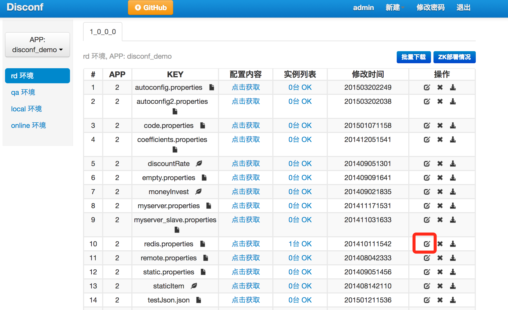

原文连接:https://www.cnblogs.com/bolingcavalry/p/11510295.html
Docker下的disconf实战全文链接
- 《Docker搭建disconf环境，三部曲之一：极速搭建disconf》；
- 《Docker搭建disconf环境，三部曲之二：本地快速构建disconf镜像》；
- 《Docker搭建disconf环境，三部曲之三：细说搭建过程》；
- 《Docker下使用disconf：极速体验》；
- 《Docker下使用disconf：细说demo开发》；
极速体验
前面的文章中我们实战了docker下搭建disconf环境，现在我们学习如何使用disconf提供的动态配置服务，本章我们不深入研究，而是以最快的速度体验一个java做的demo，此demo的功能是每隔5秒输出一组来自disconf的配置信息，内容是一个ip地址和一个端口，如果在disconf上改变了这个配置信息的内容，这个demo会立即收到配置改变的通知，并且再次输出的时候已经是最新的配置了；
下面开始极速体验吧：
新建一个docker-compose.yml文件，内容如下：
version: '2'
services:
disconf_redis_1:
image: daocloud.io/library/redis
restart: always
disconf_redis_2:
image: daocloud.io/library/redis
restart: always
disconf_zookeeper:
image: zookeeper:3.3.6
restart: always
disconf_mysql:
image: bolingcavalry/disconf_mysql:0.0.1
environment:
MYSQL_ROOT_PASSWORD: 123456
restart: always
disconf_tomcat:
image: bolingcavalry/disconf_tomcat:0.0.1
links:
- disconf_redis_1:redishost001
- disconf_redis_2:redishost002
- disconf_zookeeper:zkhost
- disconf_mysql:mysqlhost
restart: always
disconf_nginx:
image: bolingcavalry/disconf_nginx:0.0.1
links:
- disconf_tomcat:tomcathost
ports:
- "80:80"
restart: always
disconf_java:
image: bolingcavalry/disconf_standalone_demo:0.0.1
links:
- disconf_nginx:nginxhost
- disconf_zookeeper:zkhost
restart: always 打开控制台，在上述文件目录下执行：
docker-compose up -d由于要去hub.docker.com上下载六个镜像，可能会一段等待下载的时间，下载结束后会自动创建七个容器，如下图：
上图红框中的就是我们今天体验demo的容器名称(注意：不同电脑上容器的前缀后缀的数字可能不一样)，执行以下命令进入到demo容器中：
docker exec -it 05_disconf_java_1 /bin/bash进入容器后，进入/usr/local/work目录下,执行./start.sh命令启动demo，控制台输出如下图：
如上图红框所示，每隔五秒钟就会有输出一个配置信息，包括IP和端口，这些数据从何而来呢？
我们在浏览器上输入localhost可以打开disconf管理页面，用户名密码都是admin，登录成功后按照下图所示操作，就能看到这个demo里用到的配置信息：
接下来我们体验一下配置变化后，demo上被实时通知变化的效果，点击下图红框中的位置：

如下图，修改方式选择“输入文本“：
把配置文件的值改成另一个，如下图红框所示，改完再点击底部的“上传“按钮：
回到demo容器的控制台，如下图，可以看到点击上传按钮的同时，控制台输出了收到通知的信息(红框中的内容)，并且输出的ip已经变成最新的了(篮框中的内容)：
以上就是简单体验disconf效果的简易demo，可以发现disconf的配置信息能让服务使用方实时感知和获取到，对开发和运营来说都是个很有用的工具，本章只是初步体验，下一章我们会通过代码对disconf的使用做进一步了解。
欢迎关注我的公众号